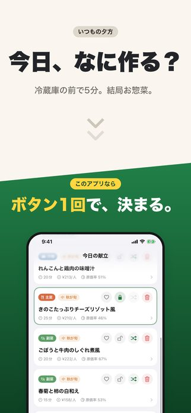
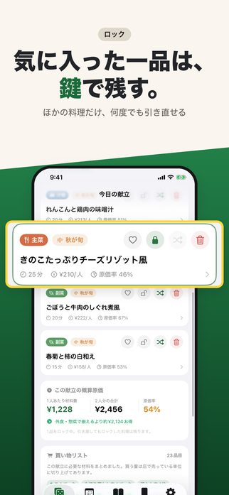
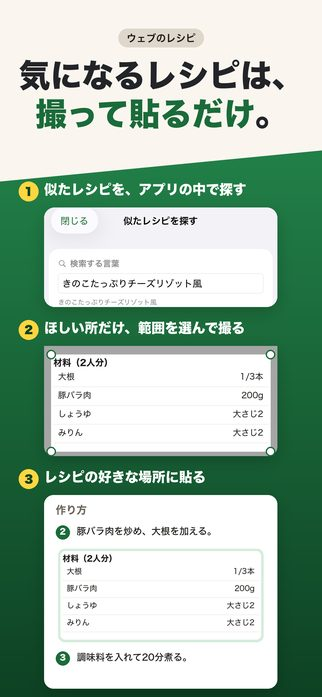
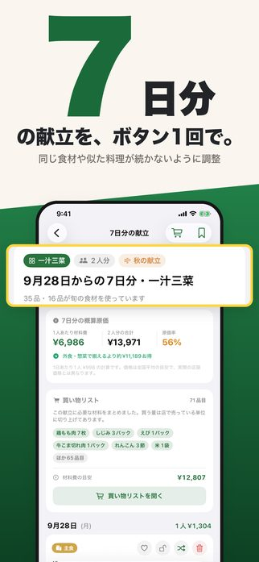
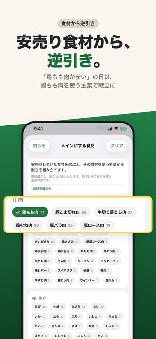
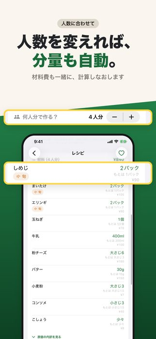
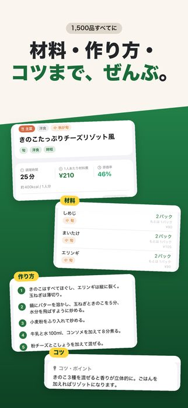
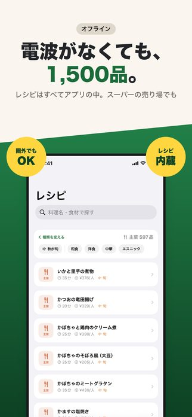
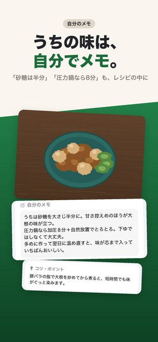
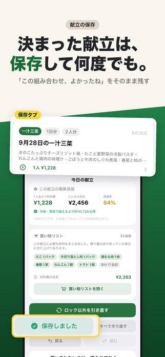

Let's decide what to eat today.
Download on the App Store (free)
Just choose the shape of the meal — ichiju-sansai (one soup, three dishes), ichiju-nisai (one soup, two dishes) and so on — and the app puts together a menu that takes seasonal ingredients and cost into account. All 1,500 recipes are built into the app, so it works offline too.










When you can't settle on a menu, I don't think it's because you don't know enough dishes. It's because there are too many options, and it's hard to tell where to start narrowing them down. You open the fridge, browse recipe sites, and end up with the usual dish anyway.
In this app, the first thing you decide is not a dish but the shape of the meal. One soup and three dishes, or one soup and two? Fish or meat for the main dish? Once the shape is set, all that's left is filling in the slots. Deciding "how many dishes" before "what to make" makes the decision much lighter.
Ichiju-sansai — literally "one soup, three dishes" — is a meal made up of one soup, one main dish and two side dishes, eaten with a staple such as rice. Besides making it easy to balance nutrition, it has the advantage that the order of work falls into place naturally: for example, you dress a side dish while the main dish is cooking. On days with no time, go with ichiju-nisai (one soup, two dishes); on days with more time, three dishes. You adjust simply by changing the frame.
When you plan several days of menus at once, ingredients overlap. If you use a little carrot three days in a row, buying one carrot up front is enough. The app totals the ingredients for all the days you planned and gives you a shopping list with the duplicates merged into one.
This helps the food budget too, because less goes to waste unused. The rough ingredient cost and cost ratio are there for the same reason: once "I spent a bit too much this week" shows up as a number, next week's plan changes.
Ingredients in season are cheaper and have more flavor. But if you build menus from seasonal ingredients alone, the same vegetables keep coming back until you tire of them. So I made the priority adjustable. Turn the season up and food costs go down; turn it down and the menus get more varied.
Menus, notes, photos and favorites stay on your device and in your own iCloud. There is no account and no sign-in. Ads are served by Google AdMob. See the privacy policy for details.
Questions and requests are welcome at tatlink002@gmail.com.